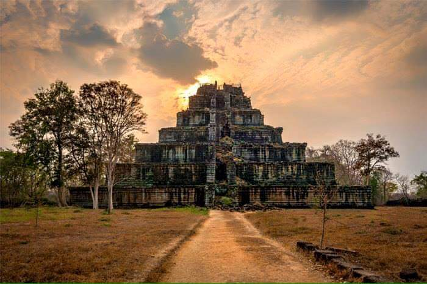

\
ប្រវត្តិប្រាសាទកោះកេរ
ប្រាសាទកោះកេរបានកសាងឡើងក្នុងរជ្ជកាលព្រះបាទជ័យវរ័្មនទី៤ឧទ្ទិសដល់អាទិទេពមួយអង្គឈ្មោះ ត្រីភូវនេស្វរៈ ដែលសិលាចារិក ជាភាសាខ្មែរថា "កម្រតែងដ៏រាជា" ជាអាទិទេពធំ ឬផ្តល់សេចក្តីសុខក្នុងពិធីសក្ការៈទេវរាជមនុស្ស លោក។។ ប្រាសាទនេះពីដើមឈ្មោះឆកគគីរ ឬផៃ្ទដីគោកគគីរ សព្វថៃ្ងហៅថា អតីត រាជធានីកោះកេរិ៍្ដ មានទំហំផ្ទៃដី១៦X១៦គីឡូម៉ែត្រ ។ ប្រាសាទនេះមាន៧ជាន់ មានកំពស់ ៣៥ម៉ែត្រ នៅតំបន់កោះកេរ្តិ៍ក្នុងផ្ទៃដីចំនួន៩គីឡូម៉ែត្រ ៤ជ្រុងសព្វថ្ងៃនូវប្រាសាទប្រមាណ១០០ប្រាសាទ ដែលកសាងឡើងតាំងពីសម័យបុរាណ ទុកសំរាប់ជាការគោរពបូជាតាមលទ្ធិព្រហ្មញ្ញសាសនា។អតីតទីតាំងរាជធានីរបស់ខ្មែរ មានអាយុកាលជាង១០០០ឆ្នាំ!
នៅក្នុងឆ្នាំ៩២១ អនាគតព្រះបាទជ័យវរ្ម័នទី៤ (ដែលអ្នកស្រាវជ្រាវភាគច្រើនបានចោទព្រះអង្គថាជាក្សត្រជ្រែករាជ្យ) បានយាងចេញពីរាជធានីយសោធរបុរៈ (អង្គរ) ទៅកសាងរាជធានីផ្ទាល់ខ្លួននៅតំបន់ឆោក គគ៌្យរ (កោះកែរសព្វថ្ងៃ)។ ព្រះអង្គបាននាំយកទៅជាមួយនូវកម្រតេង ជគត ត រាជ ដែលជាវត្ថុសំខាន់សម្រាប់រាជ្យ។ ចំពោះមូលហេតុច្បាស់លាស់នៃការយាងចេញនេះ មិនទាន់មានអ្នកណាអាចបកស្រាយបានឡើយ។ មានរឿងមួយដែលយើងមានការឯកភាពគ្នាបាន គឺប្រហែលជាព្រះអង្គ (ជ័យវរ្ម័នទី៤) មានបញ្ហា (ទំនាស់រាជបល្ល័ង្គ?) ជាមួយនឹងក្មួយទាំងពីររបស់ទ្រង់ ដែលជាបុត្ររបស់ព្រះបាទយសោវរ្ម័នទី១ (៨៨៩-៩១០)គឺព្រះបាទ ហស៌វរ្ម័៍នទី១ (៩១០-៩២៣) និងព្រះបាទ៌ឥសានវរ្ម័នទី២ (៩២៣-៩២៨) ពេលដែលបិតាសោយទីវង្គត់។
នៅពេលដែលទៅដល់ទីកន្លែងថ្មី (កោះកែរ) ព្រះបាទជ័យវរ្ម័នទី៤ បានចាប់ផ្តើមរៀបចំទីក្រុង នឹងបានកសាងប្រាសាទធំ (ឧទ្ទឹសដល់បុព្វការីជន) និងប្រាសាទប្រាង្គ (៧ថ្នាក់) សម្រាប់រាជ្យ និងឧទ្ទឹសដល់អទិទេព ត្រីភូវនេស្វរៈ (ព្រះឥសូរ) កសាងរហាល (បារាយណ៍) និងហេត្ថរចនាសម្ព័ន្ធជាច្រើនសម្រាប់ជាប្រយោជន៍សាធារណៈ។
បើតាមសិលាចារឹកប្រាសាទនាងខ្មៅ (ស្រុកសំរោង ខេត្តតាកែវ) និងសិលាចារឹកស្តុកកក់ធំ ព្រះបាទជ័យវរ្ម័នទី៤ បានប្រកាសខ្លួនជាសេ្តចគ្រប់គ្រងប្រទេសនៅក្នុងឆ្នាំ៩២៨។
យើងរកឃើញសំណង់ប្រាសាទនៅកោះកែរមានចំនួនជាង ៧០ ប្រាសាទ (រាប់ទាំងទីទួលបុរាណ)។ យោងតាមការសិក្សាស្ថាបត្យកម្ម ប្រាសាទដែលចាស់ជាងគេភាគច្រើនគឺប្រាសាទឥដ្ឋ (កសាងក្នុងចន្លោះឆ្នាំ៩២១-៩២៨) បន្ទាប់គឺប្រាសាទថ្មភក់(ប្រហែលចាប់ផ្តើមកសាងនៅឆ្នាំ៩២៨) និងប្រាសាទថ្មបាយក្រៀម (កសាងរវាងចន្លោះឆ្នាំ៩៣០ រហូតដល់ការបញ្ចប់នៃរាជ្យនៅឆ្នាំ ៩៤១)។
នៅក្នុងឆ្នាំ ៩៤៤ ព្រះបាទរាជេន្ទ្រវរ្ម័នទី២ បានរើរាជធានីមកតាំងនៅតំបន់អង្គរវិញ ដោយបានកសាងប្រាសាទប្រែរូប (សម្រាប់រាជ្យ) និងប្រាសាទមេបុណ្យខាងកើត (សម្រាប់បុព្វការីជន)។
បើទោះបីជាកោះកែរស្ថិតនៅជារាជធានីរបស់ខ្មែរក្នុងរយៈពេលតែជាង២០ឆ្នាំក៏ដោយ ការកសាង និងការអភិវឌ្ឍន៍នៅទីនេះហាក់បីដូចជាមានការគ្រោងទុកជាមុន និងមានប្លង់ច្បាស់លាស់ ទាំងការសាងសង់ពង្រីកទីក្រុង ការជ្រើសរើសទីតាំងសាងសង់បូជនីយដ្ឋាន និងទីកន្លែងជាច្រើនទៀត សម្រាប់ឧទ្ទឹសដល់ព្រះឥសូរ វិស្ណុ ព្រហ្ម គណេស និងទេពដ៏ទៃទៀតក្នុងជំនឿព្រហ្មញ្ញសាសនា ជាពិសេសគឺការកសាងប្រាសាទលឹង្គដែលមានទំហំធំៗ។
ក្រុមប្រាសាទកោះកែរ មានទីតាំងស្ថិតនៅ ក្នុងភូមិស្រយ៉ង់ជើង ឃុំស្រយ៉ង់ ស្រុកគូលេនខេត្តព្រះវិហារ។ អាចធ្វើដំណើចេញពីទីរួមខេត្តសៀមរាប កាត់តាមផ្លូវលេខ៦៤ (២១១) ចំងាយ៧២គ.ម និងបន្តទៅតាមផ្លូវខេត្តចំងាយ ៤៩គ.ម ពីទីរួមខេត្តព្រះវិហារ។
ដោយឆ្លងកាត់នូវសង្រ្គាមជាច្រើនសតវត្សរ៍ ប្រាសាទកោះកេរ្តិ៍ បានរងនូវការបំផ្លិចបំផ្លាញពីធម្មជាតិ និងពីមនុស្សយ៉ាងដំណំ។ តំបន់កោះកេរ្តិ៍ ធ្លាប់ជាសមរភូមិប្រយុទ្ធ នៅក្នុងសម័យសង្គ្រាមស៊ីវិលជាង៣០ឆ្នាំ (១៩៧០-១៩៩៨) រីឯការលួចវត្តុបុរាណ ការបំផ្លាញចំពោះសម្បត្តិបេតិកភណ្ឌជាតិ បានកើតឡើងយ៉ាងអនាធិបតេយ្យ និងមានសភាពធ្ងន់ធរបំផុត ដែលធ្វើអោយប្រាសាទមួយចំនួនធំ ត្រូវបានបាក់រលំធា្លក់ដល់ដី។
ចាប់ពីឆ្នាំ១៩៧០នៅតំបន់កោះកេរ្តិ៍ ត្រូវបានស្ថិតនៅក្នុងការកាន់កាប់របស់កងទ័ពខ្មែរក្រហម។ រហូតដល់ឆ្នាំ១៩៩៨ ក្រោយពីធ្វើសមាហរណកម្មកងទ័ពខ្មែរក្រហមមកក្នុងរាជរដ្ឋាភិបាល តំបន់កោះកេរ្តិ៍ ត្រូវបានបើកជាសាធារណៈឡើងវិញ តែនៅមានគ្រាប់មីនកប់ក្រោមដីស្ថិតនៅរាយប៉ាយពេញតំបន់ប្រាសាទនៅឡើយ។
កោះកេរ្តិ៍ ឬឆោកគគ៌្យរ គឺជារាជធានីចាស់បុរាណ មានអាយុប្រមាណជាង ១០០០ឆ្នាំ មកហើយ។ ឆោកគគ៌្យរ ជាពាក្យខ្មែរបុរាណ បើនិយាយតាមសព្វថ្ងៃ គឺបឹងគគីរ ឬស្រះគគីរ។ ពាក្យឆោកគគ៌្យរនេះហើយដែលក្លាយមកជាពាក្យ កោះកេរ្តិ៍។
នៅជុំវិញក្រុមប្រាសាទកោះកេរ្តិ៍ មាន ប្រាសាទធំ ហៅថាប្រាសាទកោះកេរ្ដិ៍ ដែលស្ថិតក្នុងកំពែងរាងបួនជ្រុងទ្រវែង ដែលមានប្រាសាទ អគារតូច ធំជាច្រើន ព្រមទាំងប្រាសាទឧបសម្ព័ន្ធដទៃៗឯទៀតជាច្រើនផងដែរ។ ស្ថាបត្យកម្មនៃតួរប្រាសាទកោះកេរ្ដិ៍ គឺជាសំណង់ប្រាសាទទោលធំ ហើយខ្ពស់ត្រដែត ដែលមានកំពូលតួប៉មតែមួយនោះ។
ប្រាសាទកោះកេរ្តិ៍ មានលក្ខណៈ ជាប្រាសាទភ្នំ កំពស់ប្រមាណ៣៥ម ចែកចេញជា៧ថ្នាក់ បីដូចជាមហាចេតិយ៍បែរមុខទៅរករាជធានីអង្គរ នៅឯទិសខាងលិច ដោយមានកាំជណ្តើរប្រមាណ៥៥កាំ។ តាមថ្នាក់ពីមួយទៅមួយ មានកំពស់៥ម មានផ្ទៃរាបប្រមាណ ២ម តាមចន្លោះថ្នាក់នីមួយៗ។ នៅលើកំពូលប្រាសាទនេះ មានរូបចំលាក់គ្រុឌ ធំៗជាច្រើន កំពុងសំដែងរិទ្ធ ទ្រនូវសិវលឹង្គ ត្រីភូវនេស្វរៈ នៅក្បែរគ្នានេះដែរ មានមាត់រន្ធអណ្តូង មួយទំហំ ៤x៤ម។
សព្វថ្ងៃនេះតំបន់អភិរក្ស ប្រាសាទកោះកេរ្តិ៍បានគ្របដណ្តប់លើផ្ទៃដីចំនួន ៨៤គីឡូម៉ែត្រក្រឡា ស្មើនិងជាង៨០០០ហិកតា។ ដើម្បីការអភិរក្ស និងថែរក្សាឲ្យបានកាន់តែដិតដល់និងមានប្រសិទ្ធិភាព តំបន់កោះកេរ្តិ៍ ត្រូវបានរាជរដ្ឋាភិបាលកម្ពុជា រៀបចំឯកសារដើម្បីស្នើសុំដាក់បញ្ចូលទៅក្នុងសម្បត្តិបេតិកភ័ណ្ឌពិភពលោកនៅថ្ងៃទី១៧ ខែកញ្ញា ឆ្នាំ២០២៣ ក្នុងសម័យប្រជុំលើកទី៤៥ នៃគណៈកម្មាធិការបេតិកភណ្ឌពិភពលោក នៅទីក្រុងរីយ៉ាដ ព្រះរាជាណាចក្រអារ៉ាប៊ីសាអូឌីត។